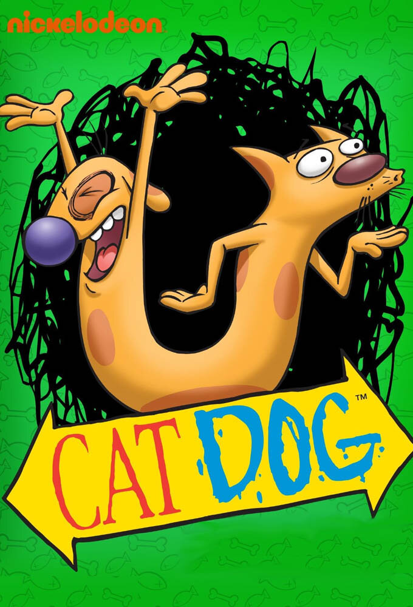

CatDog

Details
My notes
Cat dog.
About
CatDog follows two very different brothers: a cat and a dog who share one long body. Cat is more orderly and cautious; Dog is energetic and impulsive. Their opposing habits turn ordinary situations into comic trouble.
Peter Hannan created the Nickelodeon animated series. The title and the two-headed yellow character have been added to this collection; no particular episode, channel watched, language, or viewing year has been recorded.
Things to recognise
- The cat and dog at opposite ends of one body.
- Dog’s large purple nose and Cat’s pointed ears.
- The title lettering and the pair’s contrasting personalities.